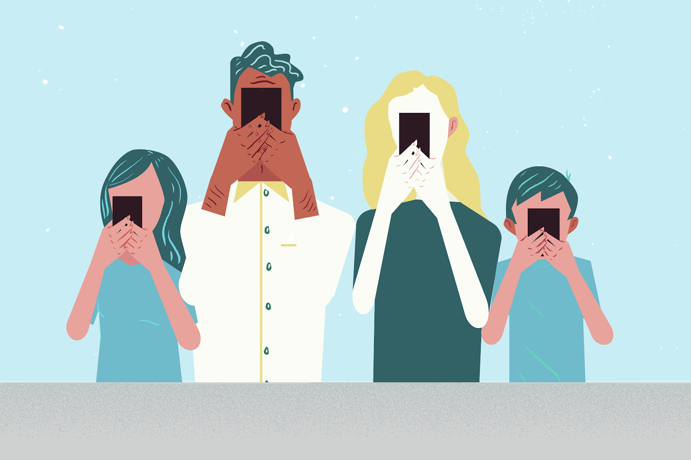

Virtual social networks have filled the people’s need and desire to communicate and stay connected. It has made face-to-face communication unnecessary to be able to stay in touch with family and friends and to belong to a group of friends.
|
Social Networks
Humans are naturally social creatures. From our young age, we are socialized and encouraged to interact with family and friends.
Facebook is the most popular social network site in the world and one of the most widely used. Millions of Canadians and billions of people all over the world log into Facebook everyday to catch up with friends and find out the latest news in the lives of their “friends.” This is definitely a popular place to hang out in the virtual world. Facebook shortens the physical distance between Canadians and using it has no additional costs associated with its use. Unlike making a long-distance phone call or even mailing a letter. |
Cellular Technology and Socializing
The use of cellular technologies is so prevalent that they flood the marketplace. Adults and teenagers alike access vast information through their smartphones.
A survey done among US teenagers use this technology to support their social lives.

Two advantages of using cellular technology were cited in the study:
They credit their phones with improving their live.
They say it leads to an increased social behaviour, creating a better life for them.
The same study also showed that possession of a cell phone, not clothes, jewelry, or shoes, tell others a lot about a person’s popularity. Aside from socialization purposes, teens also use their phones to engage in online games and other entertainment like movies and television shows. It also provides them a sense of security by being connected to family and friends and to a wealth of information. Texting is also said to be the preferred way of being in touch among teenagers despite the distractions they cause.
Containment Theory and the Internet
The control theory argued by American sociologist Travis Hirschi (1935-2017) says that social bonds control the behavior of individuals.
However, he believed that while humans are selfish and animalistic inside, they are able to control these primal urges because of the internalization of values instilled in them by society.
Containment theory is all about being a subset of social control theory:
Accordion
our self-esteem and moral development
social controls such as teachers, police or parents.
Our society hopes that the agents of socialization (e.g., family) have taught us the social norms and values so that we control ourselves by our own personal containment. If this fails, then we have the authoritative forces to keep us in check.
|
Marshall McLuhan Canadian philosopher Marshall McLuhan (1911-1930) believed that technology with all its positive and negative sides, worked as an extension of the human being. He suggested that a technology that was designed to solve a specific problem would often cause the very thing it was trying to solve. Take the cars as an example. Cars help us to reach our destination from point A to point B. Yet, having too many cars on the road creates traffic jams which delays our trips. The Impact of Technology on the Family Computer technology and the family can be examined using the family systems theory. Today, children are growing up using technology where there are programs being developed to engage toddlers in computer use.
As such, computer technology becomes integrated into their lives from such a young age that it becomes considered a normal part of everyday life. The Amish View of Technology
The Amish community often rejects technology. They view technology in the following ways:
|
Multiple Choice